<title>Leave War looks, 24 Oct</title>
<meta name="claude:viewport-fit-sides" content="cover">
<style>
/* layout: the answer list first (his D1237), then one section a question, today beside drawn-in at his iPhone's size */
:root { --bg:#eef2f4; --panel:#fff; --ink:#14202a; --ink-2:#4a5a66; --edge:#d3dde3; --accent:#0b7f99; --rec:#1d7a46;
  --f: system-ui, -apple-system, "Segoe UI", Roboto, sans-serif; }
@media (prefers-color-scheme: dark) { :root:not([data-theme="light"]) { --bg:#0d141a; --panel:#141e26; --ink:#e4edf2; --ink-2:#9db0bc; --edge:#26343f; --accent:#38c6e4; --rec:#5fd08f; color-scheme: dark } }
:root[data-theme="dark"] { --bg:#0d141a; --panel:#141e26; --ink:#e4edf2; --ink-2:#9db0bc; --edge:#26343f; --accent:#38c6e4; --rec:#5fd08f; color-scheme: dark }
body { background: var(--bg); color: var(--ink); font: 15px/1.55 var(--f);
  padding-left: max(16px, env(safe-area-inset-left, 0px)); padding-right: max(16px, env(safe-area-inset-right, 0px)); padding-block: 20px 48px; }
main { max-width: 900px; margin: 0 auto; display: grid; gap: 30px; }
h1 { font-size: 22px; margin: 0; text-wrap: balance; }
h2 { font-size: 18px; margin: 0; text-wrap: balance; }
.top { background: var(--panel); border: 1px solid var(--edge); border-radius: 10px; padding: 14px 16px; }
.top h2 { font-size: 13px; text-transform: uppercase; letter-spacing: .08em; color: var(--accent); margin-bottom: 8px; }
.top ol { margin: 0; padding-left: 20px; display: grid; gap: 8px; }
.rec { color: var(--rec); font-weight: 600; }
section { display: grid; gap: 10px; }
.pics { display: grid; grid-template-columns: repeat(auto-fit, minmax(220px, 1fr)); gap: 12px; }
figure { margin: 0; background: var(--panel); border: 1px solid var(--edge); border-radius: 10px; overflow: hidden; display: grid; align-content: start; }
figure img { display: block; width: 100%; height: auto; }
figcaption { padding: 8px 10px; font-size: 13px; color: var(--ink-2); }
figcaption b { color: var(--ink); }
.note { color: var(--ink-2); font-size: 14px; margin: 0; }
a { color: var(--accent); }
</style>
<main>
  <header>
    <h1>Leave War looks — your five points of 24 October</h1>
    <p class="note">Drawn on the real M3 build at your iPhone's size. "Today" pictures are the app as built; "drawn in" pictures change one thing, named on the picture. Tap a picture for full size.</p>
  </header>

  <div class="top">
    <h2>Answer these — newest first</h2>
    <ol>
      <li><b>Q4 · OIL taken vs FO / HO.</b> <span class="rec">Recommended: A</span> — an OIL taken wears the other leave's blue; FO and HO keep the green. <a href="#q4">Pictures</a></li>
      <li><b>Q3 · The bubble after a bid.</b> <span class="rec">Recommended: red when any row turns red, each row on its own line, from → to.</span> <a href="#q3">Pictures</a></li>
      <li><b>Q2 · A shorter one-day window.</b> <span class="rec">Recommended: A + B</span> — about 19% shorter (385 → 312 points). <a href="#q2">Pictures</a></li>
      <li><b>Q1 · The tapped day: marked, and kept in view.</b> <span class="rec">Recommended: yes, as drawn</span> — and the drag-selection window keeps its days in view too. <a href="#q1">Pictures</a></li>
      <li><b>No question:</b> a document chip opens its picture or PDF when tapped (your D1292) — built with the rest.</li>
    </ol>
  </div>

  <section id="q1">
    <h2>Q1 · The tapped day, marked and kept in view (your D1289, D1290)</h2>
    <p class="note">Already built: on a phone the one-day window scrolls the tapped day to just above itself (picture 1c). Not yet: a mark on the day, and the same scroll for a drag-selection's window.</p>
    <div class="pics">
      <figure><a href="q1-today.png">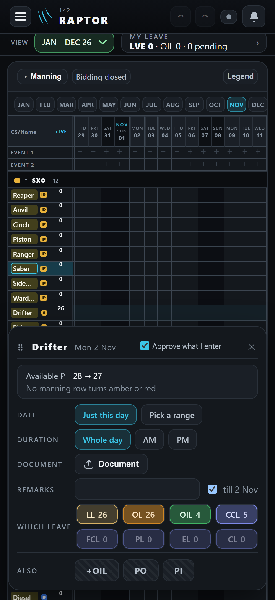</a><figcaption><b>1a · Today.</b> Drifter's 2 Nov tapped: nothing marks it.</figcaption></figure>
      <figure><a href="q1-proposed.png">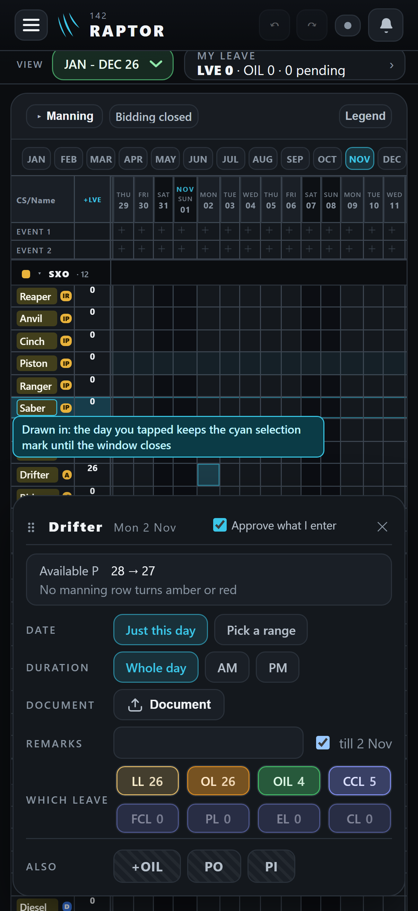</a><figcaption><b>1b · Drawn in.</b> The day keeps the grid's own cyan selection mark until the window closes.</figcaption></figure>
      <figure><a href="q2a-oneday-today.png">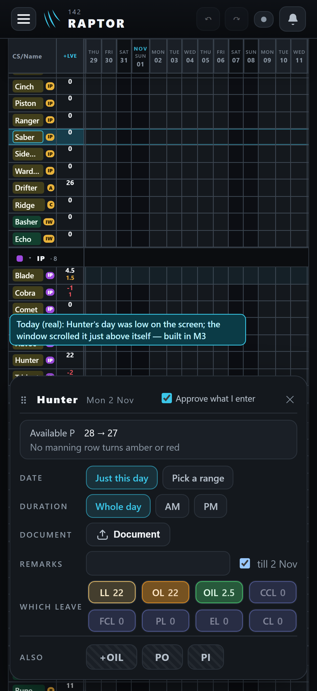</a><figcaption><b>1c · Today, built.</b> A low day tapped: the window scrolls it above itself.</figcaption></figure>
      <figure><a href="q2b-select-today.png">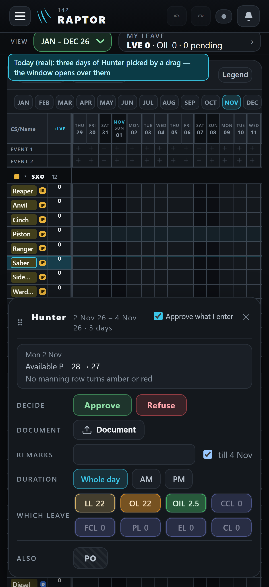</a><figcaption><b>1d · Today.</b> Three days picked by a drag: the window opens over them.</figcaption></figure>
      <figure><a href="q2c-select-proposed.png">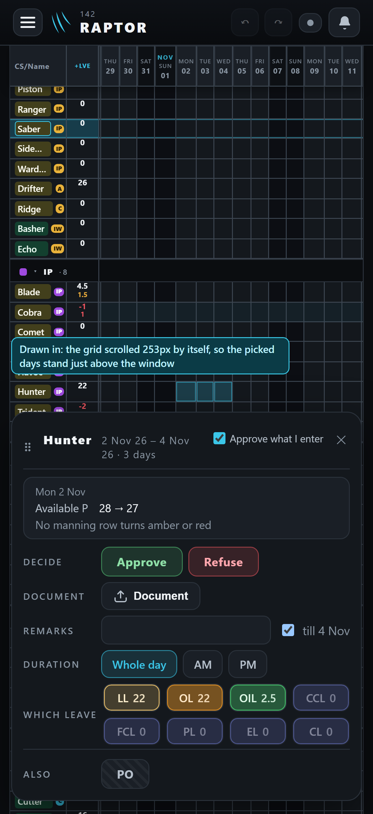</a><figcaption><b>1e · Drawn in.</b> The grid scrolls them just above the window, still marked.</figcaption></figure>
    </div>
  </section>

  <section id="q2">
    <h2>Q2 · A shorter one-day window</h2>
    <p class="note">Every row is one of your rulings (Date and Duration D1212, Document D1159, Remarks D1210, the day line D1144), so nothing is removed — only folded or set on one line. Buttons keep their size (D487).</p>
    <div class="pics">
      <figure><a href="q3-today.png">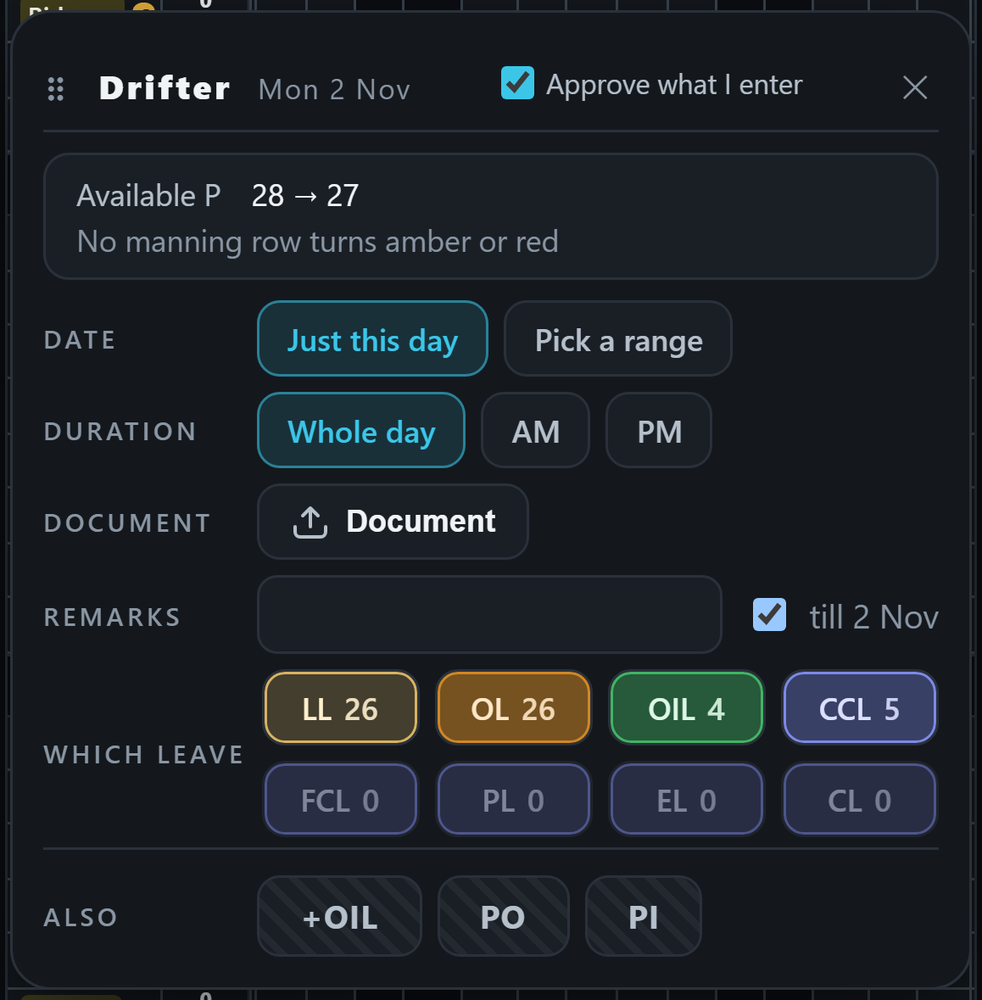</a><figcaption><b>2a · Today.</b> 385 points tall.</figcaption></figure>
      <figure><a href="q3-a.png">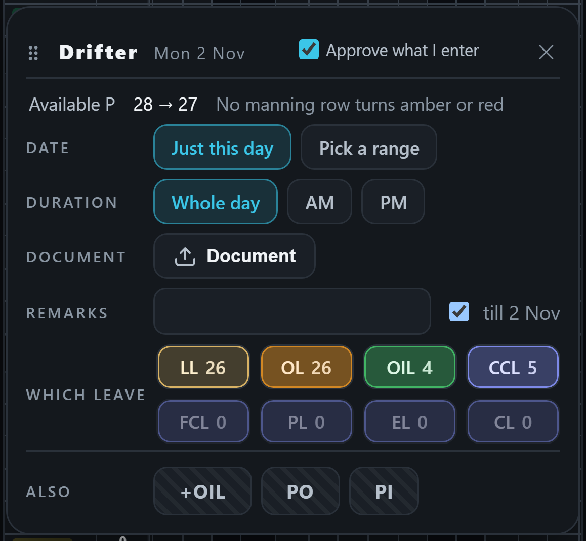</a><figcaption><b>2b · A.</b> The day line on one line, out of its box: 349.</figcaption></figure>
      <figure><a href="q3-b.png"></a><figcaption><b>2c · A + B.</b> Remarks folded into "+ Remarks" beside Document; a tap opens the box in its place: 312.</figcaption></figure>
      <figure><a href="q3-c-wide.png">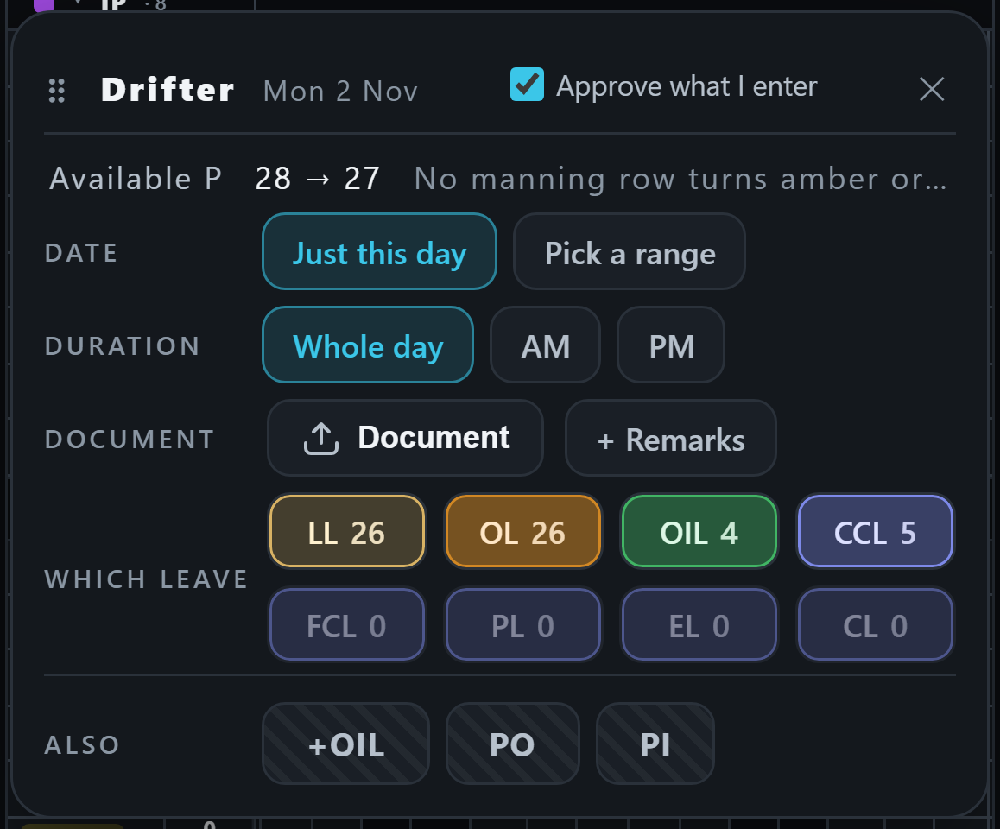</a><figcaption><b>2d · A with wider letters,</b> as your iPhone's are: "No manning row turns amber or red" no longer fits one line — it would need shorter words ("nothing turns amber or red") or a second line.</figcaption></figure>
    </div>
  </section>

  <section id="q3">
    <h2>Q3 · The bubble after a bid that turns a row red</h2>
    <p class="note">Your rulings say the bubble names the row (D1227); its colour and numbers were never ruled. The figures below are examples.</p>
    <div class="pics">
      <figure><a href="q4-today.png">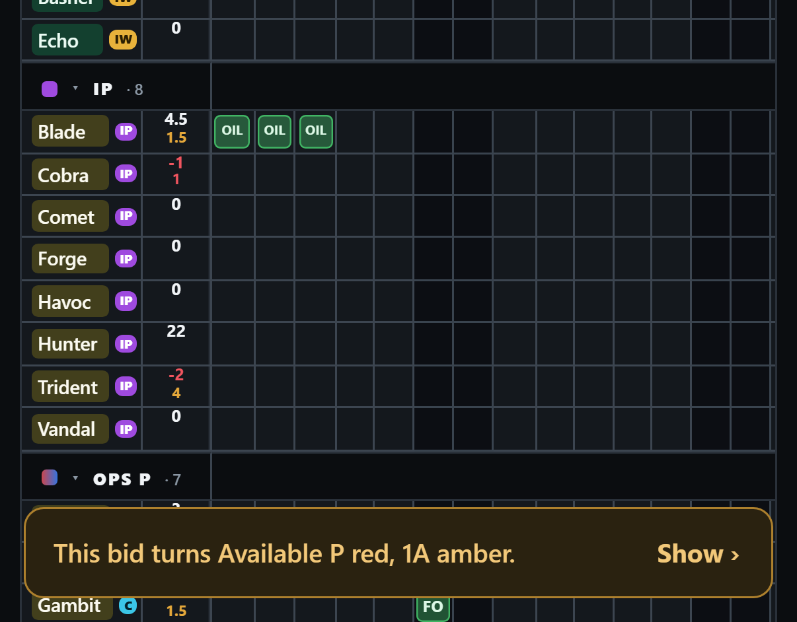</a><figcaption><b>3a · Today.</b> Always amber; the rows run together in one sentence.</figcaption></figure>
      <figure><a href="q4-fromto.png">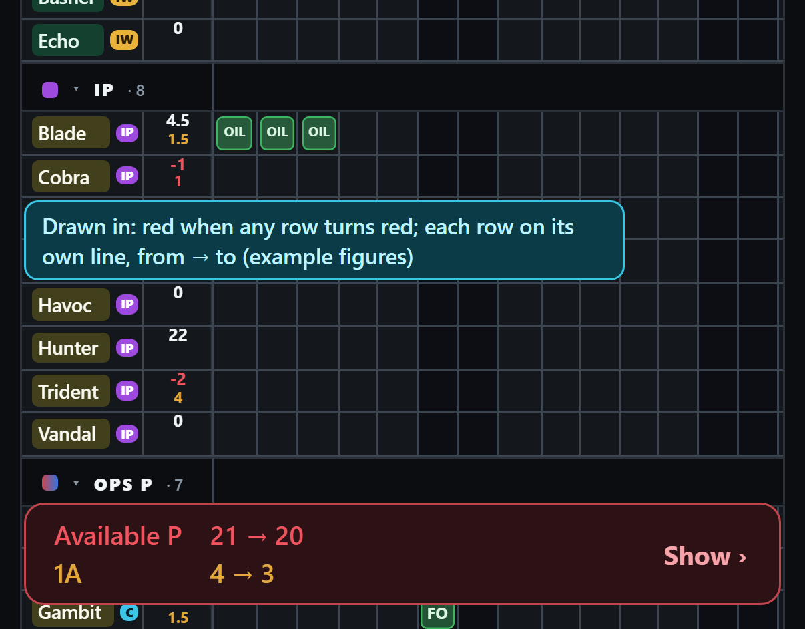</a><figcaption><b>3b · Recommended.</b> Red when any row turns red; a row a line, before → after, as the window's own day line says it.</figcaption></figure>
      <figure><a href="q4-now.png">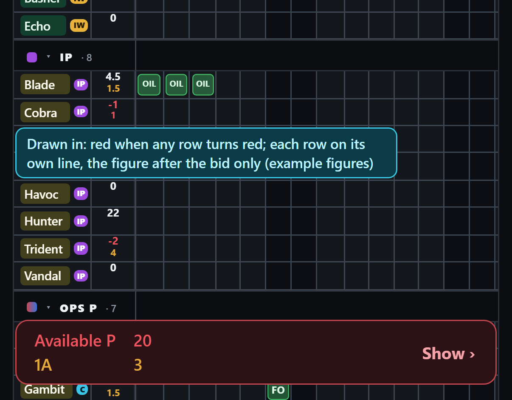</a><figcaption><b>3c · Or:</b> the same, with only the figure after the bid.</figcaption></figure>
    </div>
  </section>

  <section id="q4">
    <h2>Q4 · OIL taken and FO / HO no longer one green (your D1291)</h2>
    <p class="note">Green already means OIL earned elsewhere in the app (the OIL Earn ring), so the boxes that GIVE OIL keep it. The bid window's OIL button would follow its box, and the Legend with it.</p>
    <div class="pics">
      <figure><a href="q5-today.png">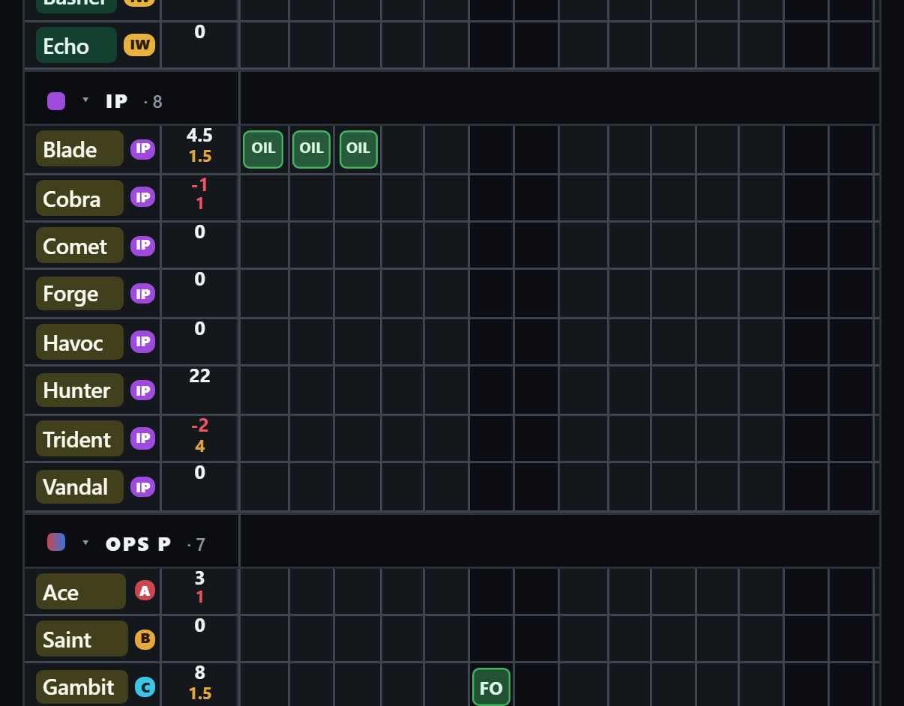</a><figcaption><b>4a · Today.</b> Blade's OIL (spent) and Gambit's FO (given) both green.</figcaption></figure>
      <figure><a href="q5-a.png">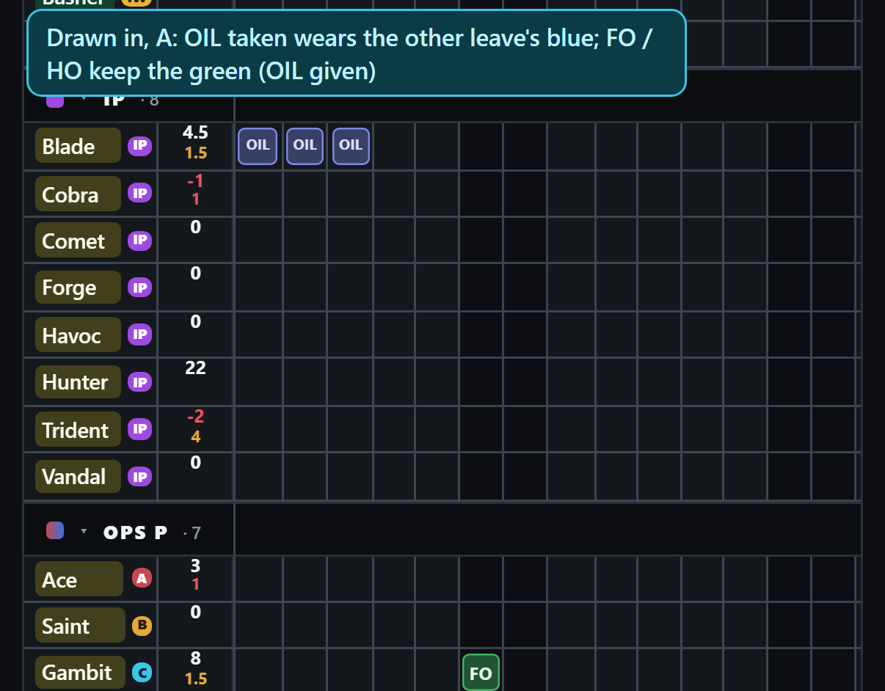</a><figcaption><b>4b · A, recommended.</b> OIL taken in the other leave's blue — it is leave spent, as a CCL is.</figcaption></figure>
      <figure><a href="q5-b.png">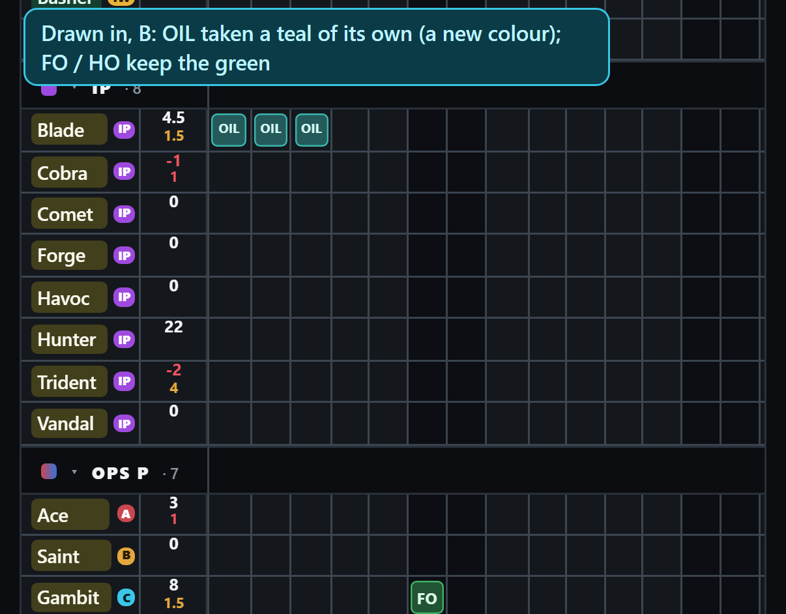</a><figcaption><b>4c · B.</b> OIL taken in a teal of its own — a new colour, close to the app's cyan.</figcaption></figure>
    </div>
  </section>
</main>
